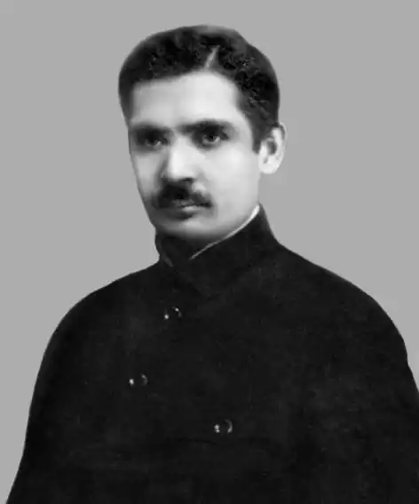

У другій половині 20-х років М. Івченко був досить популярним. Його оповідання та повісті часто друкувалися в журналах, включалися до читанок для трудових шкіл, виходили окремими книжками. Але майже шість десятиліть на творах цього письменника лежало тавро заборони, вони не перевидавалися і були відомі небагатьом. До недавнього часу бракувало й біографічних даних про автора.
М. Івченко народився 9 серпня 1890 р. на хуторі під с. Никонівкою Прилуцького повіту на Полтавщині (нині Срібнянський район Чернігівської області).
Після сільської навчався у вчительській школі, де читав заборонені цензурою твори Т. Шевченка, нелегальну політичну літературу, розповсюджував її серед селян. Це не залишилось непоміченим, і, закінчивши 1906 р. школу, М. Івченко вчителювати не зміг: обов'язкового посвідчення про благонадійність йому не видали. Працює у Полтавському земстві, згодом очолює відділення статистичного бюро в Лохвиці. Водночас екстерном закінчує Московську землеробську школу. А в періодичних виданнях ("Рада", "Русские ведомости", "Хуторянин") публікує статті й нотатки з природознавчих, економічних, національних питань. Відчуває потяг до художньої творчості. За порадами звертається до В. Короленка, який тепло підтримав дебютанта. Увагу критики привернуло його оповідання "Навесні" (1916), видрукуване в українському журналі "Промінь", що виходив тоді в Москві. Уже тут виявилися характерні риси майбутньої творчої манери письменника: прагнення за зовнішніми вчинками людини побачити її внутрішній світ, відчути її розуміння життя, природи. Людина і природа, навіть конкретніше — людина і земля — ця проблема досить виразно окреслюється в доробку новобранця літератури, коли він починає активно друкуватися у відновленому в Києві "Літературно-науковому віснику" (1917—1919), а також у перших українських радянських журналах ("Мистецтво", "Шляхи мистецтва", "Нова громада", "Червоний шлях"). М. Івченко одразу постав як проміжна ланка між митцями старшого покоління (С. Васильченко, П. Капельгородський, Н. Романович-Ткаченко) та молодшими, котрі щойно прийшли в літературу (В. Підмогильний, Г. Косинка, А. Головко). Його натурі, творчому й життєвому світосприйманню імпонували спокійна спостережливість, внутрішня врівноваженість, намагання окреслити характери героїв засобами психологізму. Такий підхід багато кому тоді видавався не відповідним напруженому, динамічному часу, вважався прагненням виявити "нейтральність", втекти від актуальних проблем. Активне творче життя М. Івченка тривало лише десять років (1919—1929). Та за цей час він опублікував збірки оповідань і повістей "Шуми весняні" (1919), "Імлистою рікою" (1926), "Порваною дорогою" (1926), "Землі дзвонять" (1928), а також п'єсу "Повідь" (1924) і роман "Робітні сили" (1929). Усі ці твори так чи інакше ставали об'єктом критичних студій різних дослідників. Професійна критика звернула увагу на письменника фактично після виходу збірки "Шуми весняні", яка в час гучних закликів до творення нового мистецтва продовжувала традиції української класичної прози. Тож не були сприйняті ні романтизм, ні "безнадійний сум і чехівське скигління" окремих персонажів збірки, ні імпресіоністичні та символістські стильові засоби, до яких виявляв схильність молодий прозаїк. Та якщо ідейно-тематичне спрямування творів першої збірки М. Івченка викликало в критики сумніви, то її емоційність всі дослідники сприйняли прихильно. Один із перших рецензентів М. Могилянський підкреслював: "Загальний ліричний тон Івченка зачіпляє в душі якісь відповідні струни, звучить справжньою поезією". Тут проступали ще не чітко сформовані індивідуальні риси творчої манери письменника. Вочевидь пробивалось намагання автора з'ясувати головну наскрізну проблему всієї творчості — людина й навколишній світ, пошуки гармонії у взаєминах особи й суспільства, пізнання її як частки загальної спільності. М. Івченко шукав підходів до розв'язання цієї проблеми на кожнім етапі своєї творчості. У наступних оповіданнях, де розкривалася соціальна тематика ("Із днів польових", 1922; "Наступ", 1923), прозаїк реалістично осмислював проблему, глибше сприймав живу дійсність. Хоча, дбаючи передусім про сюжетність, втрачав на ліризмі оповіді. Гармонія людського життя неможлива без герцю за неї — такого висновку дійшли герої його творів. А сам письменник прагне простежити її в найскладніших суспільних ситуаціях. Це спостерігаємо в повісті "Горіли степи" (1923) та п'єсі "Повідь" (1924). Через напружені роздуми над феноменом людського буття, його зв'язку з вічністю та "душею" рідної землі (повість про Г. Сковороду "В тенетах далечини", 1924) М. Івченко приходить до розкриття драматизму як стану душі особистості, яка відчула дисгармонію своїх стосунків із середовищем і від цього страждає й шукає розв'язання навислого над нею морального конфлікту. Характерним є оповідання "Смертний спів" (1924) — одне з найталановитіших у доробку письменника, близьке в окремих рисах до твору "Злодій" В. Стефаника: тут відображена досить поширена ситуація в молодій пореволюпійній літературі ("Десять", "Темна ніч" Г. Косинки, "Повстанці" В. Підмогильного, "Солонський Яр" М. Хвильового), але помічаємо тут і власне оригінальне вирішення. За напруженими епізодами з життя села періоду продрозкладки (напад селян-повстанців на продовольчий загін, розстріл комісара-латиша, принизливе порятування від смерті колишнього актора-співака, що виступає у ролі оповідача, мобілізованого на допомогу продзагонові) поставав морально-психологічний драматизм, масштаб якого — від окремої особистості до цілого народу. Своєрідно цей драматизм відображено й в інших оповіданнях на теми перехідного періоду: "Пан Коломбицький", "Векша", "Земля в цвіту". Майже всі згадувані вище твори увійшли до другої збірки оповідань "Імлистою рікою" (1926), котра одразу поставила ім'я М. Івченка в коло відомих українських прозаїків середини 20-х років. Критика, нарешті визнавши його індивідуальний стиль, все ж зауважувала то схильність письменника до пантеїзму (О. Білецький, Ю. Меженко), то розмиту сюжетність (О. Білецький, Ф. Якубовський). Чимало мовилося й про естетизм, абсолютизацію краси, "інтелігентщину". Зрозуміло, стильовою домінантою М. Івченка й надалі лишався ліризм драматичного характеру. Що більше письменник входив в атмосферу складних суспільних подій, то драматичнішим ставав ліризм, виявляючи суперечності між природним покликанням людини та можливостями реального здійснення того покликання. Вдумливий митець не міг не прагнути заглибитись у ті суперечності, зрозуміти їхню діалектику, художніми засобами допомогти людині в складному самопізнанні. Насамперед у цьому і вбачав М. Івченко завдання літератури, її актуальність. І, як лірик, відразу і дуже гостро відчув загрозу спрямування художньої творчості в річище соціального ілюстрування, її параліч однозначними ідеологічними приписами. Після збірки "Імлистою рікою" це знайшло виразне підтвердження в невеликій книжечці "Порваною дорогою" (1926), де вміщено лише троє оповідань ("Землі дзвонять", "Порваною дорогою", "Ранок"), але вони, очевидно, були для письменника важливими як певний творчий стан — до поглибленого пізнання села непівського періоду через дослідження первинної клітини суспільства. Чи не найскладніше ці проблеми переплелися в маленькій повісті "Землі дзвонять", де в центрі сільська родина та руйнування, зміни моральних і духовних цінностей, що сталися під впливом нової дійсності. Щоправда, філософічні поетизми та ускладнена символіка, до яких так щедро чи не востаннє вдався автор, на наш погляд, дещо пригасили гостроту реалістичних проникнень повісті, принаймні як для тогочасного сприйняття. У оповіданнях та повістях М. Івченка другої половини 20-х років ширшає обсервація реальної дійсності — тут і еволюція села очима міського інтелігента ("Світляки", 1927), і перебіг життя декласованих елементів ("Лісові пасма", 1927), і процес становлення творчої інтелігенції ("Березневі вітри", 1928) та студентської молоді ("Па-д'еспань", 1928). Помітно збагатилася поетика, тематичні обрії творів прозаїка. М. Івченко докладніше виписує характери своїх героїв, більше зосереджується на конкретній постаті; відчутний потяг і до більш реалістичного зображення самих подій. Врешті, виникає широкий задум художнього осмислення розвитку нації в "особливих" соціалістичних умовах. Письменник одважується на створення "Робітних сил", що виходять окремим виданням 1929 р. Роман — полемічний, пошуковий. Слід одразу сказати, що автор ще не досить певно почувався в обраному жанрі з його багатими можливостями, не завжди вдавалося йому переконливо виписати персонажів другого плану, які мали б нести більше ідейно-художнє навантаження (Горошко, Гамалій). А проте — це лиш частковості. Головне полягало в тому, що "Робітні сили" органічно влилися в річище тих проблем, котрі читач знаходив у вершинній романістиці тогочасної української прози: "Вальдшнепах" М. Хвильового, "Місті" В. Підмогильного, "Майстрі корабля" Ю. Яновського... Сюжетна канва твору — проста й непретензійна. На одній із селекційних станцій з невідомих причин сталося різке зниження цукристості буряків. Сюди виїздить молодий професор сільськогосподарського інституту Віктор Савлутинський. Навколо цієї постаті, власне, й схрещувалися усі інвективи критики, яка упереджено сприймала роман. А Савлутинський — постать неординарна. Він тривалий час перебував за кордоном, працював у селекційно-дослідному інституті в Чехії. Його судження ерудовані, хоча й нерідко різкі, безапеляційні, в них подекуди вчувається зайва самовпевненість чи й хизування. Все це викликає в одних захоплення, в інших — несприйняття. Чи не найголовнішою була теза Савлутинського щодо сильної, інтелектуальної особистості, за якою, на його думку, майбутнє. Загалом підтримуючи таку особистість, письменник тим часом і застерігав од прагматизму, авторитарності, що дедалі владніше утверджувалися у суспільстві... Одне слово, критика мала досить цікавий твір — гідний предмет для серйозної розмови про серйозні речі, та й про саме новонадбання української прози. Та ні в час виходу твору, ні пізніше вона не завдала собі такого клопоту. Наставав час інших вимог і підходів до художньої творчості, ніж у перші пореволюційні роки.